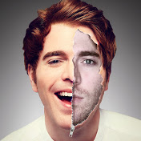

estos son mis cuatros youtuber preferidos de diferentes áreas
Ter
arquitecta madrileña de 26 años, fan acérrima de
Kim Kardashiany del mundo 'celebrity' en general

Shane
Es un comediantey youtuber estadounidense.
Es conocido por hacer vídeos de comedia con
personajes recurrentes, imitaciones y parodias
Tati
Es una famosa Blogger de belleza estadounidense
y estrella de YouTube que es mejor conocida por
su canal de YouTube "GlamLifeGuru".
Philip DeFranco
es una personalidad estadounidense de YouTube.
Él es más notable por The Philip DeFranco Show
, un programa de noticias centrado